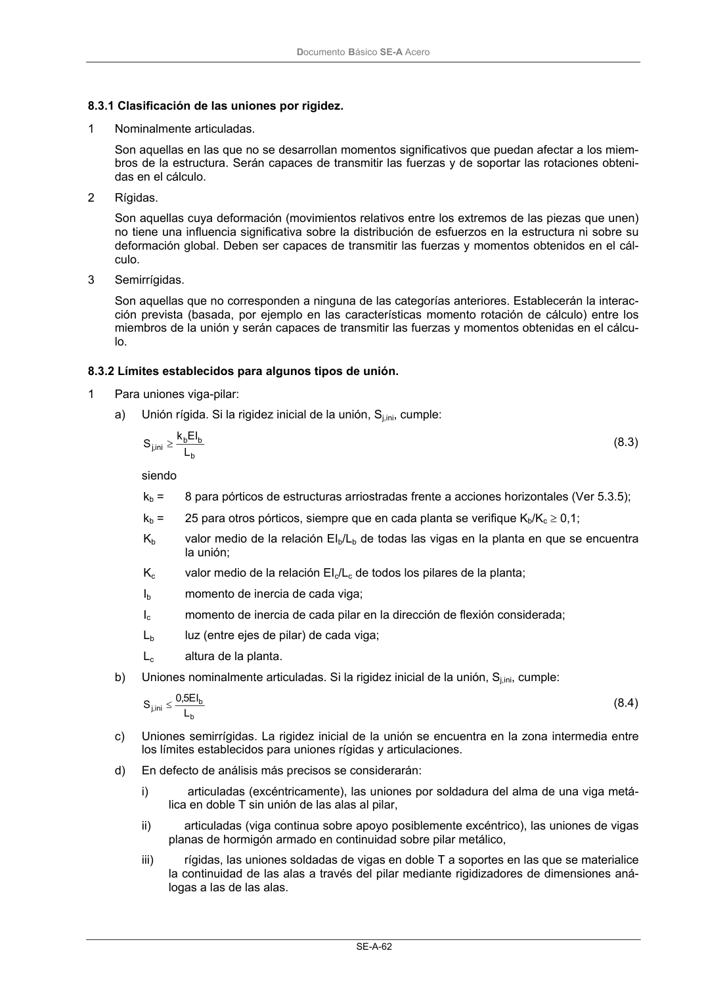
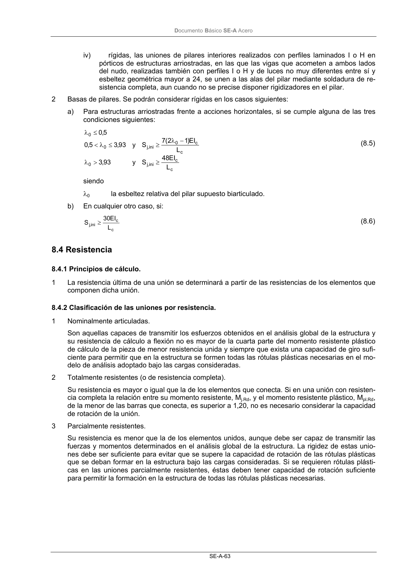

DB-SE-A · 8.3.2 Límites establecidos para algunos tipos de unión. · versión 2007-10-23 · capa oficial
Formatos: JSON compacto · Markdown · PDF fuente
Ámbito del documento · texto del ámbito · documento y tablas
ID técnico a0107 · PDF pág. 64-65 · jerarquía no validada por persona · contrastado con el literal de la página 64 (candidato tipográfico); no validado por persona · padre: a0105
8.3.2 Límites establecidos para algunos tipos de unión. 1 Para uniones viga-pilar: a) Unión rígida. Si la rigidez inicial de la unión, Sj,ini, cumple: b b b ini ,j L EI k S ≥ (8.3) siendo kb = 8 para pórticos de estructuras arriostradas frente a acciones horizontales (Ver 5.3.5); kb = 25 para otros pórticos, siempre que en cada planta se verifique Kb/Kc≥ 0,1; Kb valor medio de la relación EIb/Lb de todas las vigas en la planta en que se encuentra la unión; Kc valor medio de la relación EIc/Lc de todos los pilares de la planta; Ib momento de inercia de cada viga; Ic momento de inercia de cada pilar en la dirección de flexión considerada; Lb luz (entre ejes de pilar) de cada viga; Lc altura de la planta. b) Uniones nominalmente articuladas. Si la rigidez inicial de la unión, Sj,ini, cumple: b b ini ,j L EI 5,0 S ≤ (8.4) c) Uniones semirrígidas. La rigidez inicial de la unión se encuentra en la zona intermedia entre los límites establecidos para uniones rígidas y articulaciones. d) En defecto de análisis más precisos se considerarán: i) articuladas (excéntricamente), las uniones por soldadura del alma de una viga metá- lica en doble T sin unión de las alas al pilar, ii) articuladas (viga continua sobre apoyo posiblemente excéntrico), las uniones de vigas planas de hormigón armado en continuidad sobre pilar metálico, iii) rígidas, las uniones soldadas de vigas en doble T a soportes en las que se materialice la continuidad de las alas a través del pilar mediante rigidizadores de dimensiones aná- logas a las de las alas. DocumentoBásico SE-A Acero SE-A-63 iv) rígidas, las uniones de pilares interiores realizados con perfiles laminados I o H en pórticos de estructuras arriostradas, en las que las vigas que acometen a ambos lados del nudo, realizadas también con perfiles I o H y de luces no muy diferentes entre sí y esbeltez geométrica mayor a 24, se unen a las alas del pilar mediante soldadura de re- sistencia completa, aun cuando no se precise disponer rigidizadores en el pilar. 2 Basas de pilares. Se podrán considerar rígidas en los casos siguientes: a) Para estructuras arriostradas frente a acciones horizontales, si se cumple alguna de las tres condiciones siguientes: c c ini ,j 0 c c 0 ini ,j 0 0 L EI 48 S y 93 ,3 L EI )1 2 ( 7 S y 93 ,3 5,0 5,0 ≥ > λ − λ ≥ ≤ λ < ≤ λ (8.5) siendo λ0 la esbeltez relativa del pilar supuesto biarticulado. b) En cualquier otro caso, si: c c ini ,j L EI 30 S ≥ (8.6)


PDF fuente redistribuible: copia fiel enlazada en esta página (SHA256 verificado).